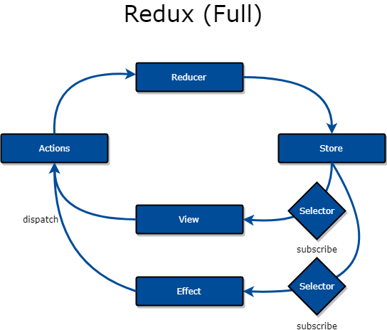
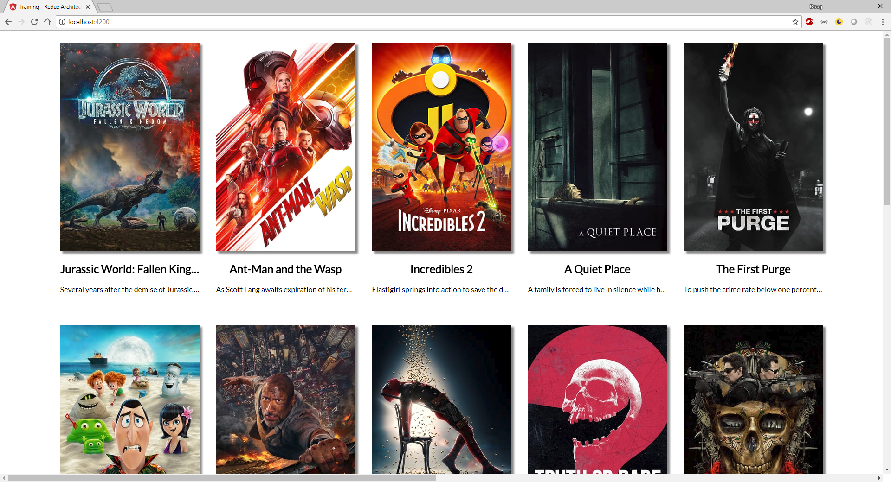

Redux
Separate the concerns!
Who Am I?
Doug Day
What is Redux?
- Based on Facebook's Flux
- It was created when the traditional MVC approach wouldn't scale.
- MVC had a problem with circular dependencies.
- Under the hood, Flux (and Redux) is just a modification of MVC.
Wait...
- Facebook made something good?
- Why are we talking Redux?
NgRx
Ng - Angular
Rx - RxJS
- Literally means Angular + RxJS
- Actually means Angular + Redux + RxJS
OK, what's the architecture?

Hold on...
That looks more complex!
Separation of Concerns
- SOLID Design
- Redux naturally fulfills 3 of 5 SOLID principles
Magic Bullet?
Redux is only worth the effort when the application's complexity outweighs the complexity of the architecture itself.
Workshop Time!
Let's build a box-office movie browsing web site!
